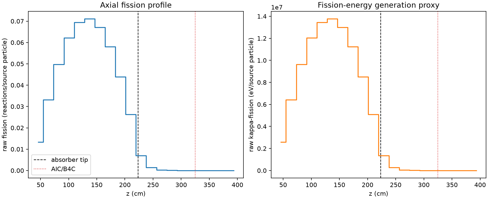
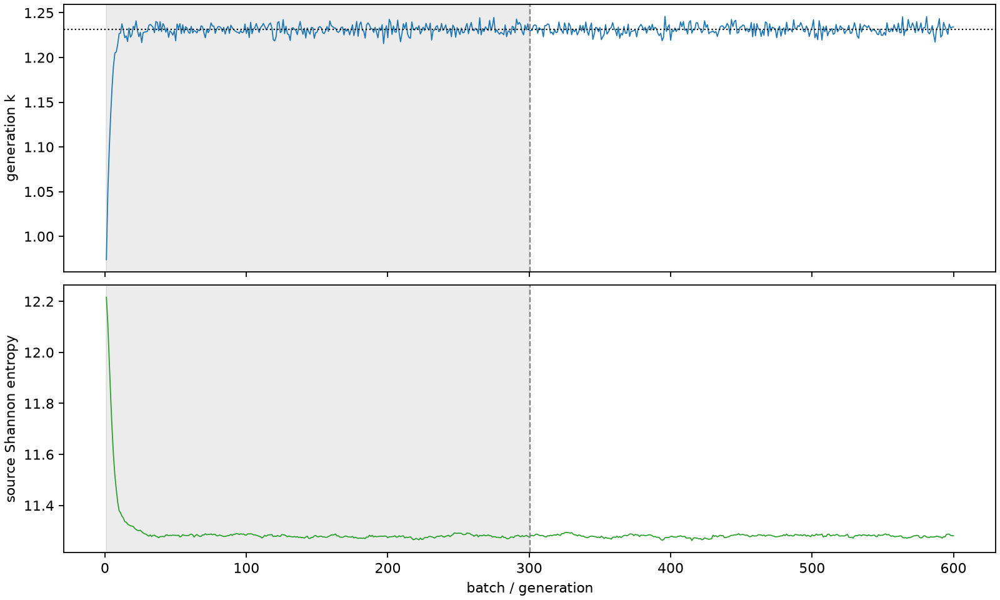

| field | value |
|---|---|
| experiment | V2-ADAPTIVE_01-0017 |
| k | 1.2313399876286284 |
| MC standard error | 0.0001894330977724709 |
| seconds | 1060.200081832998 |
| acceptance | not_assessed |
| convergence | review_required |
Completed is output integrity only; physical and statistical review required. Zero tallies do not prove zero production or zero uncertainty.
| diagnostic | value |
|---|---|
| geometric fuel voxels | 5280 |
| zero fission tally voxels | 743 |
| low signal fuel voxels | 1610 |
| low signal fission share | 5.074163465509143e-05 |
| low signal kappa share | 5.075980481028673e-05 |
| important fission share | 0.9501678330422664 |
| previous filter included | 3670 |
| duration estimate s | 1562.5173488400023 |
| actual minus estimate s | -502.3172670070044 |
| fission relative MC error | statistics |
|---|---|
| all_geometric_fuel | {"voxels": 5280, "positive_mean_voxels": 4537, "zero_mean_voxels": 743, "undefined_relative_error_voxels": 743, "median": 0.009859720485019137, "p95": 0.8579074863209559, "maximum": 1.0000000000000002} |
| low_signal | {"voxels": 1610, "positive_mean_voxels": 867, "zero_mean_voxels": 743, "undefined_relative_error_voxels": 743, "median": 0.6127700932479689, "p95": 1.0, "maximum": 1.0000000000000002} |
| important_95pct | {"voxels": 2345, "positive_mean_voxels": 2345, "zero_mean_voxels": 0, "undefined_relative_error_voxels": 0, "median": 0.00664034116220204, "p95": 0.00966105130495504, "maximum": 0.011651867564404512} |
| outside_previous_filter | {"voxels": 1610, "positive_mean_voxels": 867, "zero_mean_voxels": 743, "undefined_relative_error_voxels": 743, "median": 0.6127700932479689, "p95": 1.0, "maximum": 1.0000000000000002} |
| kappa_fission relative MC error | statistics |
|---|---|
| all_geometric_fuel | {"voxels": 5280, "positive_mean_voxels": 4537, "zero_mean_voxels": 743, "undefined_relative_error_voxels": 743, "median": 0.00984906629115492, "p95": 0.8561472385381974, "maximum": 1.0000000000000002} |
| low_signal | {"voxels": 1610, "positive_mean_voxels": 867, "zero_mean_voxels": 743, "undefined_relative_error_voxels": 743, "median": 0.6125023530088443, "p95": 1.0, "maximum": 1.0000000000000002} |
| important_95pct | {"voxels": 2345, "positive_mean_voxels": 2345, "zero_mean_voxels": 0, "undefined_relative_error_voxels": 0, "median": 0.006633264343835959, "p95": 0.009650362961800708, "maximum": 0.011639781196859426} |
| outside_previous_filter | {"voxels": 1610, "positive_mean_voxels": 867, "zero_mean_voxels": 743, "undefined_relative_error_voxels": 743, "median": 0.6125023530088443, "p95": 1.0, "maximum": 1.0000000000000002} |
| axial bin | fission share | kappa-fission share |
|---|---|---|
| 1 | 0.026498787009885706 | 0.026499845515997402 |
| 2 | 0.06584525359957721 | 0.06584486004097936 |
| 3 | 0.09901316163257146 | 0.0990124876379105 |
| 4 | 0.12356662118047806 | 0.12356570809006334 |
| 5 | 0.13802110890390298 | 0.1380201993530955 |
| 6 | 0.1412969195557077 | 0.14129636075235236 |
| 7 | 0.1333213441198436 | 0.1333205459023234 |
| 8 | 0.11533923241792567 | 0.11533843272656404 |
| 9 | 0.0873398458070061 | 0.08733930237239296 |
| 10 | 0.052244752785141194 | 0.05224445524340119 |
| 11 | 0.014006235200356296 | 0.014009594167429612 |
| 12 | 0.002718562021502769 | 0.0027196936060421336 |
| 13 | 0.0006133480591618749 | 0.0006136089158665651 |
| 14 | 0.00013742198227124938 | 0.0001374889636948991 |
| 15 | 2.882298948030272e-05 | 2.8832887574251063e-05 |
| 16 | 7.074490026731743e-06 | 7.075003596095316e-06 |
| 17 | 1.396885084977055e-06 | 1.397170243466249e-06 |
| 18 | 9.294606380170315e-08 | 9.318503588044946e-08 |
| 19 | 1.841401254908343e-08 | 1.8465436992526017e-08 |
| 20 | 0.0 | 0.0 |
Histories include the inactive-to-active transition at batch 300. kappa-fission approximates fission energy production, not total heat deposition.

